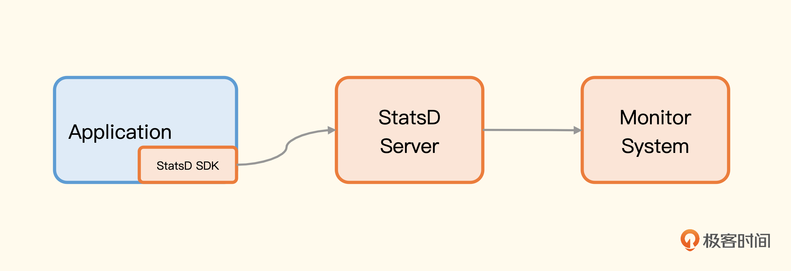
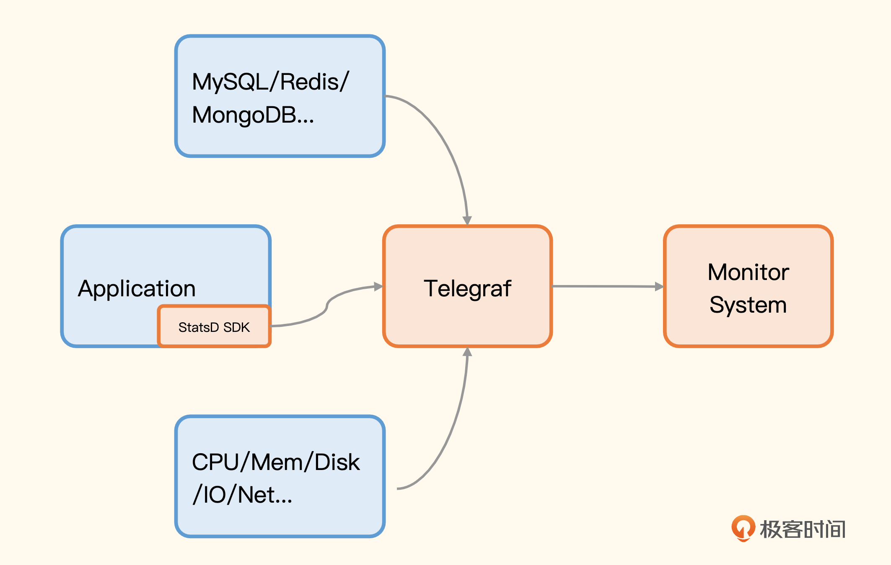

StatsD
StatsD 开始被熟知是因为 《Measure Anything, Measure Everything》 这篇文章，Etsy 的工程师使用 NodeJS 开源了这个 项目。
StatsD 有个很大的特点是使用 UDP 传输协议，大部分计算逻辑都挪到了 StatsD 的 Server，SDK 层面的工作非常轻量。

StatsD SDK 与 StatsD Server 之间通信使用的是UDP 协议，UDP 协议是 fire-and-forget，无需建立连接，即使 StatsD Server 挂了，也不影响应用程序，而对于延迟分布区间这样的计算逻辑，是在 StatsD Server 里计算的，也不会影响应用程序，所以整个 StatsD 的设计是非常轻量的，对应用程序基本没有影响。
由于 StatsD 相当知名，所以很多采集器都实现了 StatsD 的协议，比如 Telegraf、Datadog-agent，也就是说，图上的 StatsD Server 是可以换成 Telegraf 或 Datadog-agent 的。这样就不用部署太多进程，一个采集器包打天下，就拿 Telegraf 来说吧，替换后架构就变成了这样。

下面我来演示一下，用一个小程序做个埋点，让你有个感性的认识。我们就把 Telegraf 当做 StatsD Server 来接收埋点数据，Telegraf 是 InfluxData 主导开源的监控采集器，我之前做过一次调研，调研笔记我也放在 这里，供你参考。
Telegraf 提供 StatsD 的 input 插件，在配置文件中搜索 inputs.statsd 就能找到相关的配置段了，里边有详尽的注释，我就不再赘述了，直接上配置样例。
[[inputs.statsd]]
protocol = "udp"
service_address = ":8125"
percentiles = [50.0, 90.0, 99.0, 99.9, 99.95, 100.0]
metric_separator = "_"
Telegraf重启之后就会在 8125 开启 UDP 监听，我们写的程序就可以往这个地址推送监控数据了。因为我对 Go 语言比较熟悉，所以这里我给你提供一个 Go 埋点的例子。
package main
import (
"fmt"
"math/rand"
"net/http"
"time"
"github.com/smira/go-statsd"
)
var client *statsd.Client
func homeHandler(w http.ResponseWriter, r *http.Request) {
start := time.Now()
// random sleep
num := rand.Int31n(100)
time.Sleep(time.Duration(num) * time.Millisecond)
fmt.Fprintf(w, "duration: %d", num)
client.Incr("requests.counter,page=home", 1)
client.PrecisionTiming("requests.latency,page=home", time.Since(start))
}
func main() {
// init client
client = statsd.NewClient("localhost:8125",
statsd.TagStyle(statsd.TagFormatInfluxDB),
statsd.MaxPacketSize(1400),
statsd.MetricPrefix("http."),
statsd.DefaultTags(statsd.StringTag("service", "n9e-webapi"), statsd.StringTag("region", "bj")),
)
defer client.Close()
http.HandleFunc("/", homeHandler)
http.ListenAndServe(":8000", nil)
}
这个 Web 服务只有一个根路径，逻辑也很简单，就是随机 sleep 几十个毫秒当做业务处理时间。整体逻辑是这样的：首先，我们要通过 statsd.NewClient 初始化一个 StatsD 的客户端，参数中指定了 StatsD 的 Server 地址（在这个例子里就是 Telegraf 的 8125），指定了所有监控指标的前缀是 http.，还指定了两个全局 Tag，一个是 service=n9e-webapi，另一个是 region=bj。通过 TagStyle 指定要发送的是 InfluxDB 样式的标签。
然后，在请求的具体处理逻辑里上报了两个监控指标，一个是 requests.counter，另一个是 requests.latency，并为它们指定了一个指标级别的标签 page=home，整体看起来还是比较简单的。
Telegraf 支持多种 output 插件，可以使用比较快捷的 outputs.file 插件，把生成的指标写到 stdout，来验证效果。
[[outputs.file]]
files = ["stdout"]
请求数量和请求延时都是典型的应用层面的监控指标，如果我们想要做业务指标监控，比如订单量监控，应该怎么做呢？其实逻辑是完全一样的，仿照 requests.counter 的写法，做一个订单量的指标，每次创建一个新订单的时候，就给订单量指标 +1。一般一个服务会部署多个实例，每个实例都统计了自己的订单量，要计算最近一分钟的订单数量的话，只需要在服务端使用 PromQL 做二次汇总计算。